Manual de utilização — Girassol e FITI
Guia do painel de gestão de conteúdos • Edição de 21 de Outubro de 2026
As capturas foram feitas num ambiente de demonstração, sem candidaturas, contactos ou credenciais reais. Os dados ilustrativos não foram publicados no site.
Este manual descreve a versão actual do site da Associação Cultural Girassol e do FITI. Destina-se à equipa que gere textos, fotografias, programação, candidaturas e apresentação. Os exemplos são ilustrativos; publique apenas informações confirmadas pela Associação.
1. Começar: acesso e orientação
Abra o endereço habitual do site e acrescente /admin/ ao caminho da instalação. Numa instalação GitHub Pages com o nome do repositório, preserve esse caminho antes de /admin/. Utilize o email e a palavra-passe da conta administrativa fornecida pelo responsável técnico. O campo «Password» significa palavra-passe.
Não existe criação pública de contas nem recuperação de palavra-passe no painel. Para obter acesso ou recuperar a conta, contacte o responsável técnico. Nunca coloque credenciais nos conteúdos públicos.
No computador, as áreas aparecem na barra lateral; abra os grupos para ver as opções. No telemóvel, utilize a lista «Área do CMS». «Visão geral» apresenta o painel inicial. «Página inicial» gere a Associação e «FITI» gere a página do festival. O link «Manual de utilização» abre este guia noutra janela.
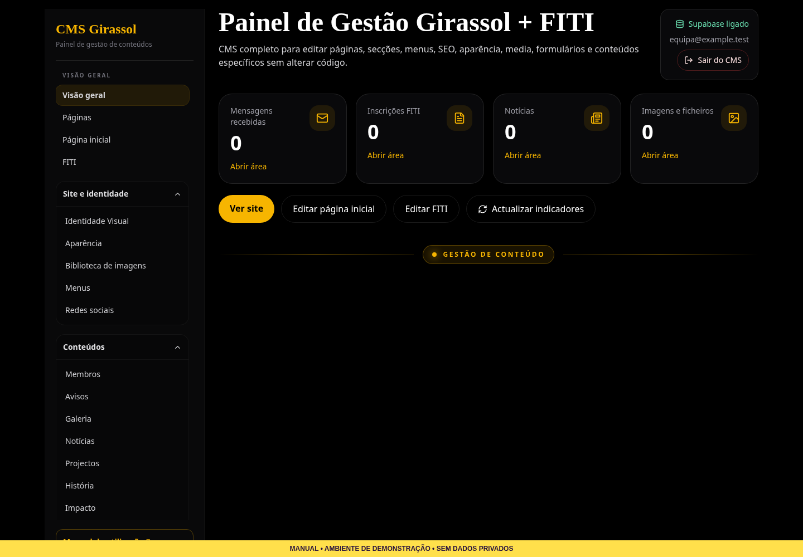
2. Guardar, publicar e verificar
- Abra a área correspondente e espere que os conteúdos acabem de carregar.
- Seleccione o registo ou a secção. Faça as alterações e confirme os campos obrigatórios.
- Utilize o botão de guardar dessa área e aguarde a confirmação. Se aparecer um erro, mantenha a página aberta e corrija-o antes de continuar.
- Abra o site público noutra janela e actualize a página. Verifique o resultado no computador e no telemóvel.
As alterações guardadas no CMS aparecem quando o site é aberto ou actualizado, sem nova publicação do código. Alterações à programação do próprio site exigem uma publicação técnica separada. «Pré-visualizar» abre o site com os dados já guardados; não mostra alterações ainda por guardar.
Para terminar a sessão, utilize «Sair» no painel; evite deixar uma conta aberta num computador partilhado.
Os botões variam: nas secções use «Guardar»; em Aparência use «Guardar apresentação»; na Identidade Visual guarde cada campo; nas listas use «Guardar alterações». Em Membros e Avisos, a gravação aplica-se à lista inteira. Não mude de área nem feche o separador com alterações por guardar.
Excepção: os campos de WhatsApp, email, localização e texto do rodapé, no final de Aparência, tentam guardar ao alterar o valor. Confirme-os voltando a abrir a área e actualizando o site; estes campos não apresentam a mesma confirmação da apresentação.
«Activo» controla a presença pública de um registo. «Publicado» controla uma notícia. «Publicar» e «Ocultar» controlam uma secção. Guardar um registo inactivo conserva-o no CMS sem o mostrar no local correspondente.
3. Onde alterar cada coisa
- Textos e ordem das secções da Associação: Página inicial.
- Textos e ordem das secções do festival: FITI.
- Cores, movimento, menu, faixa de avisos e posição dos parceiros: Aparência.
- Logotipos e ícone do navegador: Identidade Visual.
- Carregar fotografias, documentos e vídeos: Biblioteca de imagens.
- Pessoas: Membros; títulos dessa área: Aparência → Pessoas.
- Notícias, Projectos, História, Impacto e Galeria: respectivas áreas de conteúdos.
- Logotipos dos apoios: Parceiros.
- Datas e eventos: Edições FITI, Programação FITI e Oficinas FITI.
- Companhias e memória de edições anteriores: Companhias FITI e Arquivo FITI.
- Mensagens recebidas: Contactos, Inscrições FITI e Imprensa.
Um título de secção e os seus registos são diferentes. Por exemplo, o título «Programação» muda em FITI; os espectáculos mudam em Programação FITI. O título «Parceiros» muda na página; os logotipos mudam em Parceiros.
4. Páginas e identificação nos motores de pesquisa
Em Páginas, edite o título e a descrição da Associação ou do FITI. Preserve os identificadores home e fiti: são usados pelo site para encontrar os conteúdos. Um identificador não é um título de apresentação.
O título e a descrição são aplicados no navegador depois de os dados carregarem. A imagem de partilha pode estar guardada, mas isso não garante que WhatsApp, Facebook ou motores de pesquisa actualizem a pré-visualização. Para alterar os metadados iniciais de partilha, peça apoio técnico.
5. Página inicial e FITI: secções
Abra Página inicial ou FITI e localize a secção. Edite os títulos, descrições, etiquetas, botões e imagens disponíveis. «Mover ↑» e «Mover ↓» alteram a ordem. «Ocultar» retira a secção; «Publicar» volta a apresentá-la. Guarde e verifique no site.
Na Associação existem abertura, apresentação, missão e visão, história, áreas de actividade, projectos, impacto, galeria, notícias, parceiros e contactos. No FITI existem abertura, apresentação, edição actual, programação, companhias, oficinas, bilhetes, arquivo, parceiros, imprensa, contactos e formulários.
Apagar um texto pode fazer reaparecer um texto padrão. Para retirar uma secção inteira, utilize «Ocultar». Alguns elementos têm também um interruptor em Aparência. Não crie campos com nomes antigos para tentar controlar o desenho actual.
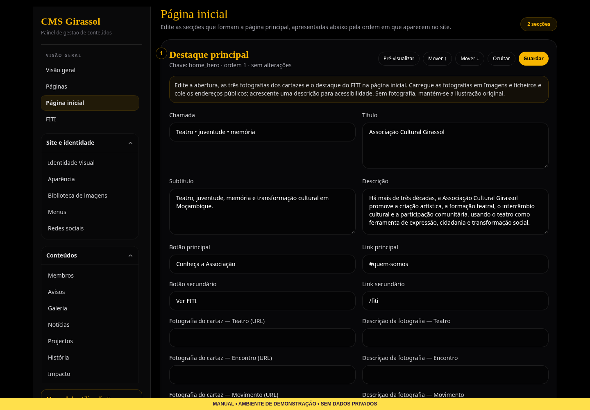
6. Abertura, cartazes e destaque do FITI
Em Página inicial → Destaque principal, ou FITI → Destaque FITI, pode editar o título, subtítulo, descrição, textos de manifesto e botões. Cada botão precisa de um texto claro e de um destino correcto. Teste-o após guardar.
Os cartazes artísticos têm campos para três fotografias — Teatro, Encontro e Movimento — e respectivas descrições alternativas. Existem ainda palavras e legendas dos cartazes, frase do papel de fundo, texto final, assinatura e texto do selo artístico. Use os campos apresentados no editor.
Para substituir a imagem da figura do cartaz: carregue a fotografia na Biblioteca, copie ou seleccione o seu URL, preencha a fotografia correspondente e guarde a secção. A fotografia substitui a ilustração central; os papéis, letras e elementos decorativos continuam no desenho. Um URL vazio ou uma imagem que falha pode mostrar a ilustração original.
O pequeno logotipo do cartaz vem da Identidade Visual. O CMS permite trocar imagens e textos; não é um editor de desenho vectorial para modificar cada traço da ilustração original.
O destaque de acesso ao FITI na página inicial tem título, texto, identificação, textos do mapa e botões nos campos do destaque principal. Em Aparência → Elementos culturais pode activar esse destaque e o mapa de Moçambique. Os botões devem conduzir ao FITI e à programação. No menu do FITI, mantenha visível o acesso de regresso à Associação.
7. Identidade Visual
Nesta área pode configurar o logotipo da Associação, o do FITI, textos alternativos, ícone do navegador, logotipo específico do rodapé e da abertura da Associação. Campos vazios podem utilizar os logotipos oficiais de reserva.
- Carregue o ficheiro na Biblioteca de imagens, de preferência na categoria logos.
- Seleccione-o no campo pretendido ou cole o URL público completo.
- Escreva uma descrição alternativa curta, por exemplo «Associação Cultural Girassol».
- Clique em «Guardar» no próprio campo. Repita para os restantes campos alterados.
O logotipo animado do fundo tem imagem própria, activação, opacidade e velocidade. Só aparece com um URL de imagem válido. A opacidade permitida é de 0,01 a 0,25 e a duração de 18 a 120 segundos; mais segundos significam movimento mais lento. O ícone do navegador actualiza após o CMS carregar; o navegador pode conservar uma versão em memória.
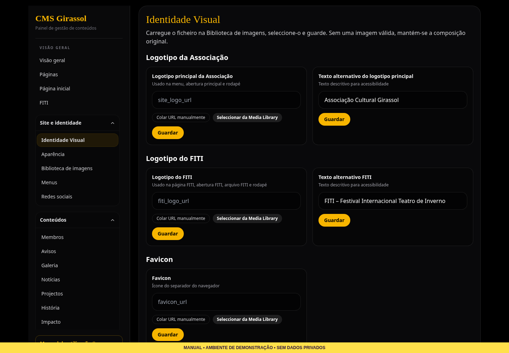
8. Biblioteca de imagens e ficheiros
A biblioteca reúne ficheiros públicos. As categorias disponíveis são logos, gallery, partners, fiti, news, documents e videos. Estes nomes internos organizam os ficheiros; não são textos destinados aos visitantes.
- Preencha o título, escolha a categoria e acrescente descrição e texto alternativo quando aplicável.
- Seleccione o ficheiro e clique em «Carregar».
- Espere pela mensagem de sucesso e pela geração do URL público.
- Use «Copiar URL» ou o selector de imagem no conteúdo de destino.
- Guarde também o conteúdo onde colocou o ficheiro. Carregar uma imagem não a coloca automaticamente numa página.
A biblioteca aceita imagens, vídeos e PDF; os limites efectivos dependem da configuração do armazenamento. Prefira imagens optimizadas e vídeos externos quando forem grandes. Não carregue documentos confidenciais: o endereço do ficheiro é público.
Não há ferramenta de corte ou compressão no CMS. Prepare a imagem antes de carregar. Fotografias podem ser cortadas pelo enquadramento da página; logotipos preservam as proporções. Recomenda-se fundo transparente para logotipos e imagens nítidas sem ficheiros excessivamente pesados. Um caminho do computador não funciona como URL público.
«Apagar» pode remover o registo e o ficheiro guardado. Antes de apagar, confirme que nenhuma página, notícia ou parceiro ainda utiliza esse URL. Não existe reciclagem no painel.
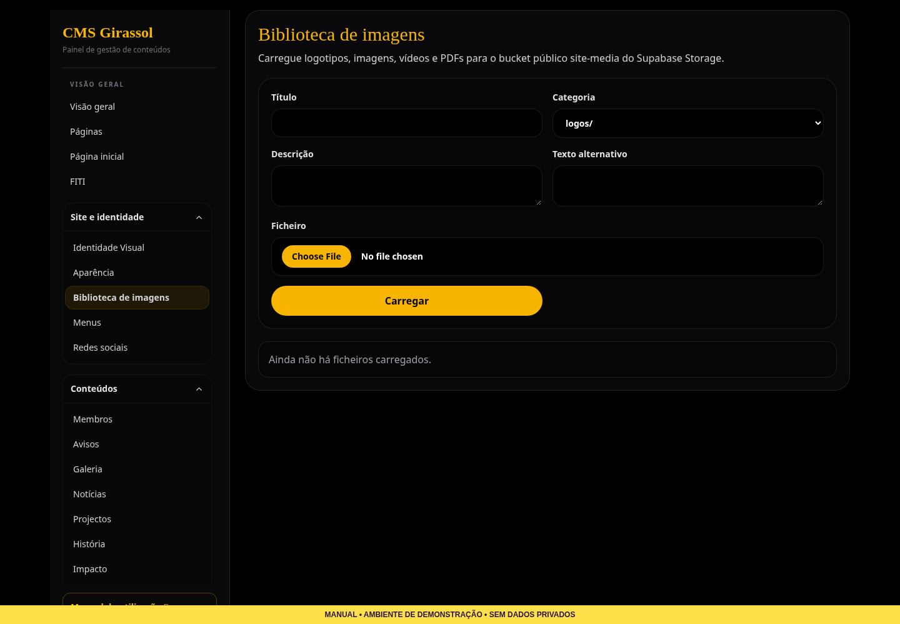
9. Aparência: cores e movimento
A Associação e o FITI têm conjuntos de cores independentes. Pode alterar abertura, três fundos alternados de secção, cartões, menu, rodapé, texto, destaques e pinceladas interactivas. Use o selector de cor ou um valor hexadecimal como #FFD83D. Mantenha o texto legível sobre o fundo escolhido.
Os três fundos de secção alternam conforme a posição; mover uma secção pode mudar a cor que recebe. Para conservar identidades distintas, guarde e confira as duas páginas.
Em Movimento, active ou desactive o fundo animado e a interacção global com rato ou toque. A intensidade varia entre 0,2 e 2. Pode editar a indicação da interacção. A pausa de movimento do visitante e a preferência do dispositivo por movimento reduzido podem suspender animações, mesmo que estejam activadas no CMS.
No final, clique em «Guardar apresentação». O painel confirma a gravação e a leitura dos valores. Se falhar a validação de cor ou número, corrija o campo indicado antes de tentar novamente.
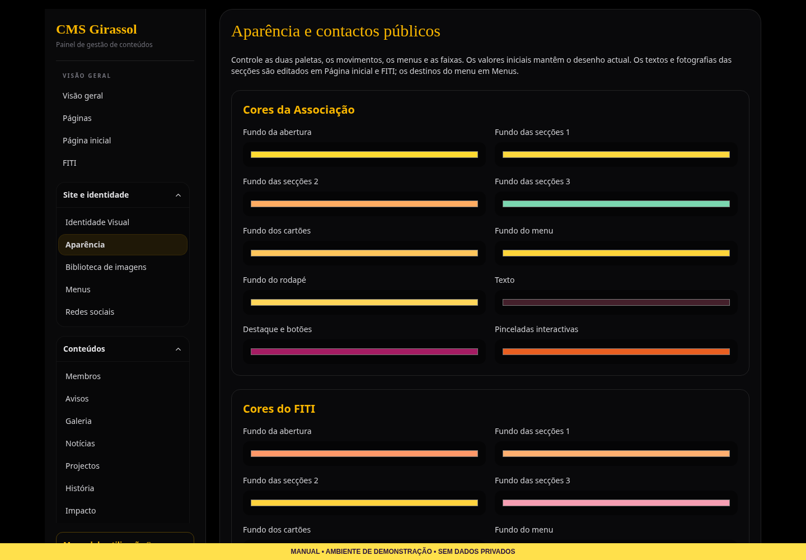
10. Menus e navegação
Em Menus, cada entrada tem etiqueta, URL, página, menu, ordem e estado activo. Os identificadores de grupo são main_menu para o menu principal, fiti_menu para o festival e footer_menu para os links do rodapé. Preserve estes nomes no campo Menu.
Use etiquetas curtas: «Associação», «FITI», «Programação» ou «Contactos». Exemplos de destinos internos: /fiti/ para o festival, /fiti/#programacao para a programação e /#quem-somos para a apresentação. Confirme que a âncora existe no site. Não acrescente manualmente o nome do repositório aos destinos internos. Para sites externos utilize o endereço HTTPS completo e assinale Externo quando aplicável.
A ordem menor aparece primeiro. O cabeçalho mostra até seis entradas; o destaque do FITI pode reservar uma dessas posições. O menu completo organiza os grupos activos. Desactivar uma entrada retira-a da navegação, mas não apaga a página de destino.
Em Aparência → Menus pode configurar o destaque do FITI, identificação de cada site, chamadas principais, texto de regresso à Associação, título do menu completo, nomes dos grupos e assinatura. Teste a navegação nos dois sites e no telemóvel.
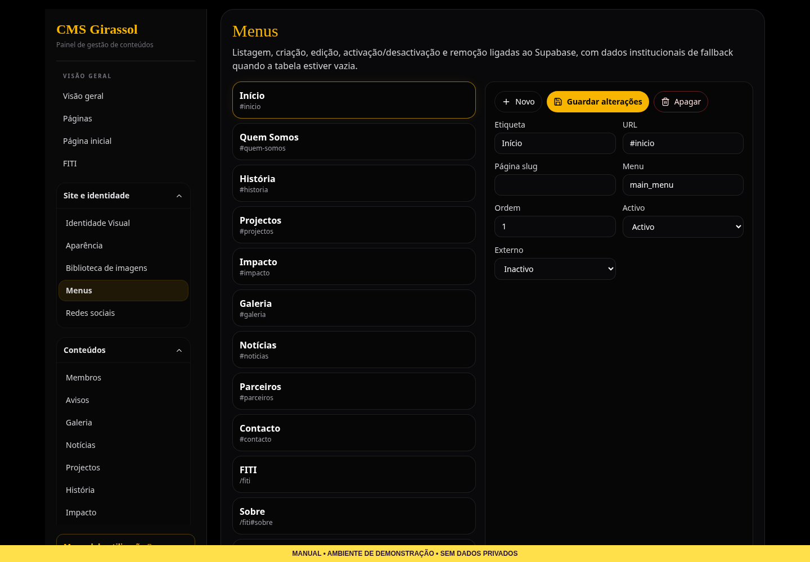
11. Membros da Associação e do FITI
Abra Membros e use «Adicionar perfil». Preencha nome, função, URL da fotografia e biografia. Escolha a Área: Associação ou FITI. Os perfis aparecem pela ordem da lista; este editor não dispõe de campos de ordem, ligação individual ou activação. Não publique perfis sem autorização da pessoa.
«Remover» retira a linha da edição; «Guardar alterações» aplica a lista inteira. Para retirar um perfil, remova-o e guarde; conserve uma cópia fora do CMS se precisar de o voltar a publicar. Confira a fotografia, a função e a biografia no site correspondente.
Em Aparência → Pessoas altere a chamada, título, introdução, frase artística, mensagem quando não há perfis e botão de contacto. Estes textos não substituem os dados individuais de cada membro.
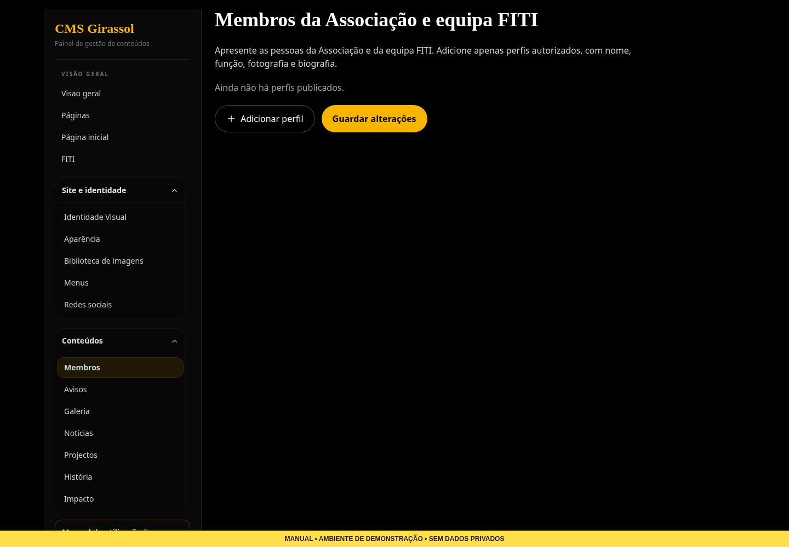
12. Avisos em movimento
Em Avisos, adicione o texto e a ligação e guarde a lista. Os avisos são partilhados pelos dois sites e seguem a ordem da lista; não há selecção individual de site ou estado activo neste editor. Use frases curtas e informações com data clara: «Candidaturas até 30 de Novembro», por exemplo, apenas se esse prazo for oficial.
Em Aparência → Avisos escolha «Peça flutuante», «Faixa na base do ecrã» ou «Ocultar». Pode activar movimento, editar identificação e títulos e ajustar a duração entre 10 e 120 segundos. Um valor maior torna o movimento mais lento.
A peça flutuante permanece sobre o ecrã durante a navegação. Não corresponde à área de contactos no fim da página. O visitante pode pausar o movimento; a preferência de movimento reduzido também é respeitada. Retire ou actualize avisos cujo prazo terminou.
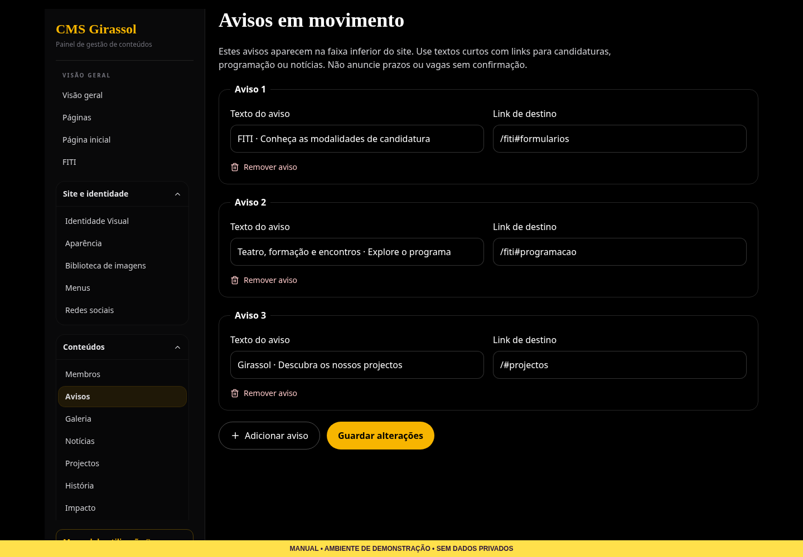
13. Parceiros e faixa animada
Em Parceiros, crie ou seleccione um registo e preencha nome, categoria, logotipo, ligação e ordem. Assinale Página inicial e/ou FITI e mantenha Activo. Um parceiro pode aparecer nos dois sites. Guarde as alterações.
Em Aparência → Parceiros escolha a posição: fim do conteúdo, ordem definida nas secções ou antes dos contactos. Se os contactos estiverem ocultos, a posição antes dos contactos pode passar para o fim. A secção Parceiros tem de estar publicada na página correspondente.
Active o movimento e ajuste a duração entre 10 e 120 segundos. Com dois ou mais logotipos a faixa pode animar; com apenas um permanece estática. Passar o rato, focar uma ligação com o teclado, pausar localmente ou reduzir movimento pode interromper a animação. A mensagem sem parceiros também é editável.
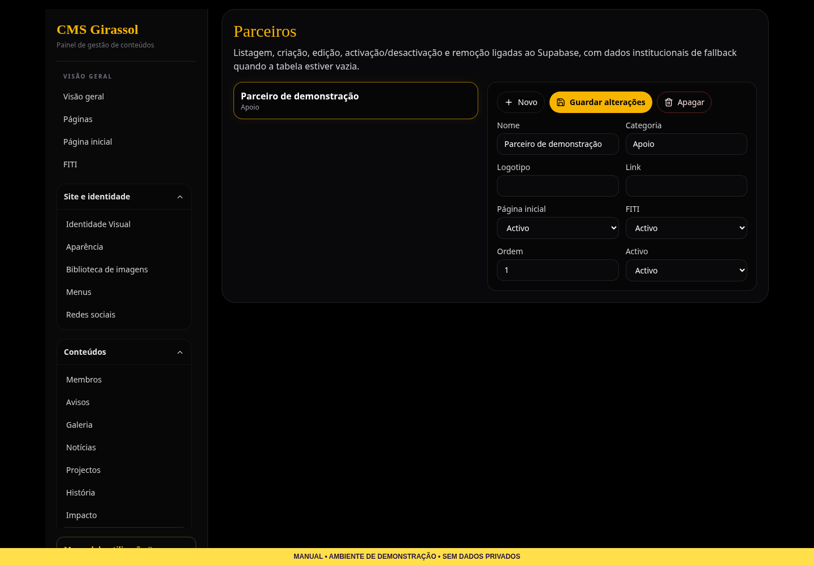
14. Galeria, notícias e projectos
Galeria: preencha título, URL da imagem, categoria, descrição, texto alternativo, ordem e Activo. As categorias permitem filtrar no site. O visitante pode ampliar imagens, navegar e fechar a visualização com Escape. O título geral da secção altera-se em Página inicial.
Notícias: edite título, identificador de endereço (slug), resumo, conteúdo, imagem, categoria e Publicado. O slug pode ser gerado quando fica vazio. Use um identificador simples e estável. A data deriva da criação do registo; não existe agendamento automático de publicação. Desmarque Publicado para retirar a notícia da área pública.
Projectos: preencha título, descrição, imagem, ligação, destaque, ordem e Activo. O visitante pode abrir mais informação. Uma ligação deve conduzir a uma página real; confirme-a antes de publicar.
Nas listas, seleccione um registo existente para o editar ou «Novo» para criar outro. Se a área estiver vazia, podem aparecer sugestões sem registo gravado. Essas sugestões só se tornam conteúdos guardados depois da gravação. Evite guardar várias vezes como novos registos para não duplicar conteúdos.
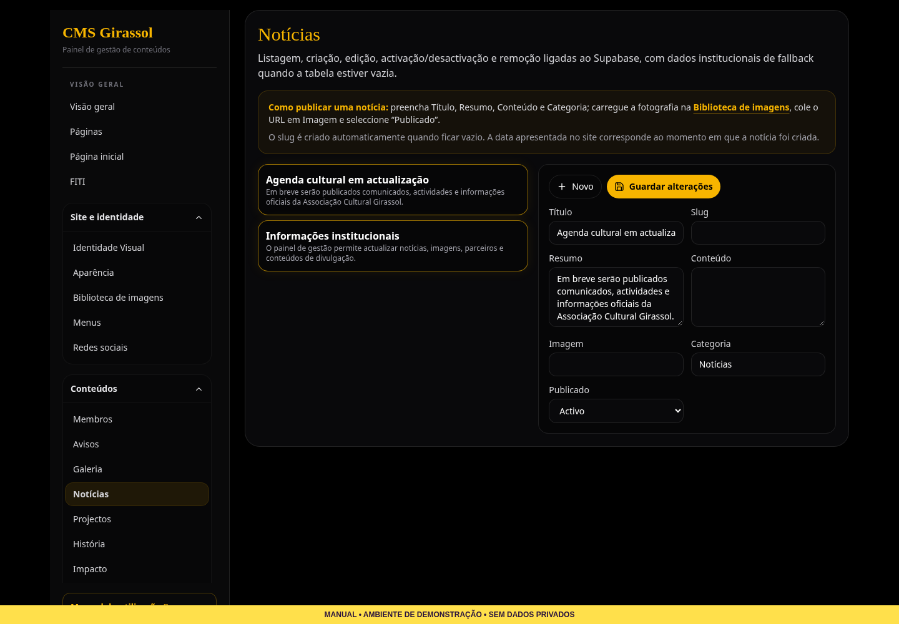
15. História, impacto e redes sociais
Em História, registe ano, título, descrição, ordem e Activo. Use uma entrada por marco importante. Em Impacto, preencha indicador, valor numérico, sufixo, ordem e Activo. Exemplo ilustrativo: valor 20, sufixo «+», indicador «actividades». Utilize números que a equipa possa confirmar.
Em Redes sociais, configure plataforma, etiqueta, URL, ordem e Activo. Utilize o endereço público completo do perfil. A apresentação dos ícones varia por local; algumas áreas têm tratamento específico para Facebook e Instagram. Guardar uma plataforma não garante um ícone próprio em todas as secções.
16. Preparar uma edição do FITI
- Em Edições FITI, crie ou abra a edição e preencha ano, tema, datas, locais, países, descrição, texto curatorial e cartaz.
- Mantenha apenas uma edição activa para evitar ambiguidades. O calendário utiliza a edição activa mais recente por ano.
- Em FITI, actualize os textos de abertura, apresentação, edição actual, bilhetes e formulários.
- Registe os espectáculos em Programação FITI e as oficinas em Oficinas FITI, associando-os à edição correcta.
- Actualize Companhias FITI, parceiros, avisos e destinos dos botões.
- Confira o site completo e só então divulgue a edição.
O campo «Datas» da edição é descritivo. Escrever aí um intervalo não cria eventos no calendário. Activar uma edição também não cria um arquivo da anterior.
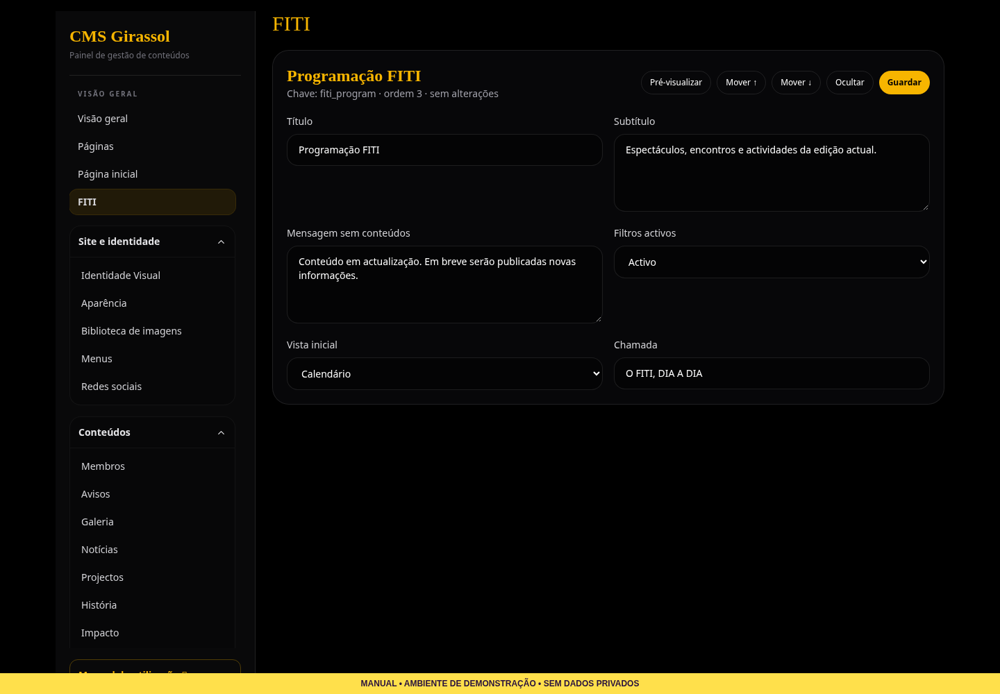
17. Programação e calendário interactivo
Em Programação FITI, preencha título, edição, data, hora, companhia, país, local, categoria, sinopse, duração, classificação etária, imagem, URL de reserva e Activo. Use a data real no selector e uma hora clara, como 19:30. As horas da programação devem ser comunicadas no horário de Maputo, UTC+2.
A categoria distingue teatro, dança, música, seminários e debates. Mantenha os nomes dos locais consistentes para os filtros não criarem opções repetidas. A reserva é uma ligação externa ou interna válida; não é um sistema de pagamento do CMS.
O calendário reúne programação e oficinas activas da edição actual. As actividades sem data ficam em «Datas por confirmar», em vez de ocuparem um dia no calendário. Para sessões em vários dias, crie uma ocorrência por data. Para vários horários distintos, use registos separados.
Em FITI → Programação FITI, escolha a vista inicial Calendário ou Agenda e active os filtros. No site, o visitante pode mudar de mês, escolher um dia, pesquisar, filtrar por categoria ou local, abrir detalhes e adicionar a actividade ao calendário pessoal através de um ficheiro ICS.
A exportação pessoal depende da data e da hora: uma hora não reconhecida pode produzir um evento de dia inteiro; sem data não há exportação. Uma duração como «90 min» ajuda a calcular a hora final. Confira um evento exportado antes de anunciar esta opção ao público.
No calendário, as setas do teclado mudam o dia ou a semana; Home e End percorrem a semana; PageUp e PageDown mudam o mês; Enter ou Espaço seleccionam a data. Escape fecha os detalhes quando abertos.
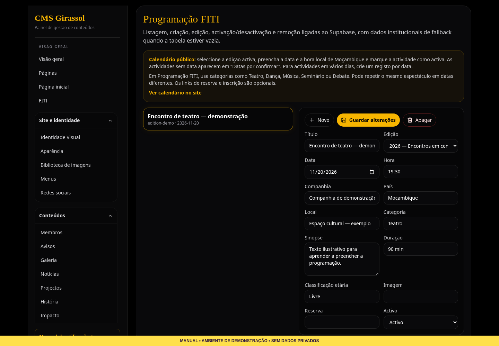
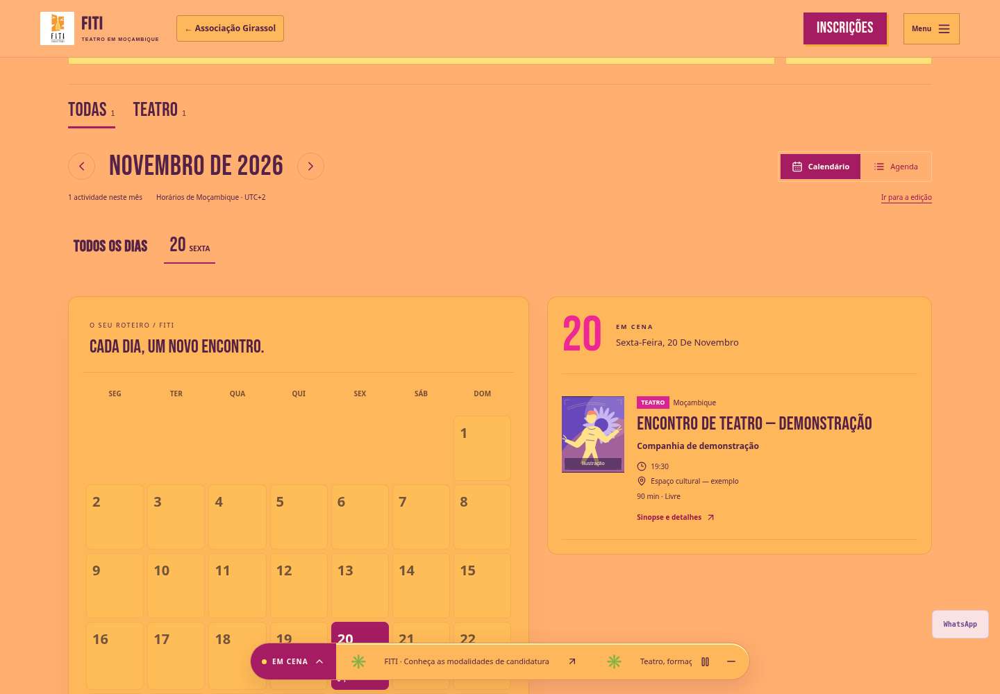
18. Companhias e oficinas
Companhias FITI: preencha edição, nome, país, cidade, descrição, imagem, rede social, espectáculo, ordem e Activo. A listagem pública utiliza actualmente todas as companhias activas. Associar uma companhia a uma edição antiga não a oculta automaticamente; desactive os registos que já não devem aparecer.
Oficinas FITI: preencha edição, título, formador, data, hora, local, vagas, público-alvo, descrição, URL de inscrição e Activo. As oficinas entram também no calendário da edição actual. Para uma oficina em vários dias, crie as ocorrências necessárias.
O campo de vagas é informativo: não existe controlo automático de lotação, pagamento ou reserva de lugares. O editor actual das oficinas não tem campo próprio de fotografia; não procure uma imagem de oficina num campo de outra área.
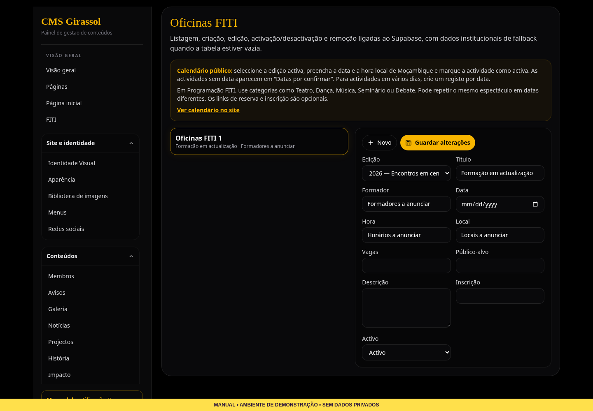
19. Inscrições, imprensa e contactos recebidos
As candidaturas do FITI ficam em Inscrições FITI. Existem tipos para companhia, voluntariado, imprensa e informação. Dependendo da candidatura, são guardados contacto, país, cidade, espectáculo, sinopse, duração, integrantes, necessidades técnicas, vídeo, portfólio e observações.
Abra o registo, leia os dados, actualize o estado e guarde. Pode adoptar os estados «Novo», «Em análise», «Respondido» e «Arquivado» de forma consistente. Este gestor também permite editar os dados da candidatura: preserve o texto original sempre que não houver uma correcção confirmada.
Imprensa apresenta os pedidos desse tipo e permite actualizar o estado. Contactos reúne as mensagens gerais e também permite actualizar o estado. Alterar um estado não envia email. A equipa responde através do seu serviço de email ou contacto habitual e depois regista o estado no CMS.
Trate os dados recebidos como informação interna. Não os copie para conteúdos públicos, fotografias ou ficheiros da biblioteca. O painel não oferece gestão de permissões por utilizador nem um histórico de recuperação disponível para estas alterações.
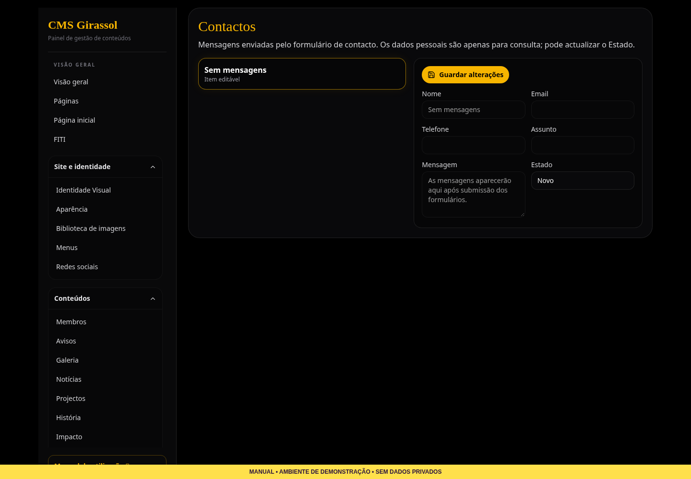
20. Arquivo das edições anteriores
Em Arquivo FITI, crie um registo com ano, tema, datas, descrição, cartaz, URL do programa PDF, vídeo e Activo. Carregue o programa em documents e copie o URL público. Confirme que o PDF abre sem autenticação.
O arquivo é preparado manualmente; não existe transferência automática da edição anterior. Os cartões públicos apresentam a informação principal, cartaz e ligações disponíveis. O campo «Galeria JSON» é avançado e fica armazenado, mas actualmente não gera uma galeria nos cartões públicos. Não é necessário preenchê-lo para publicar um arquivo básico.
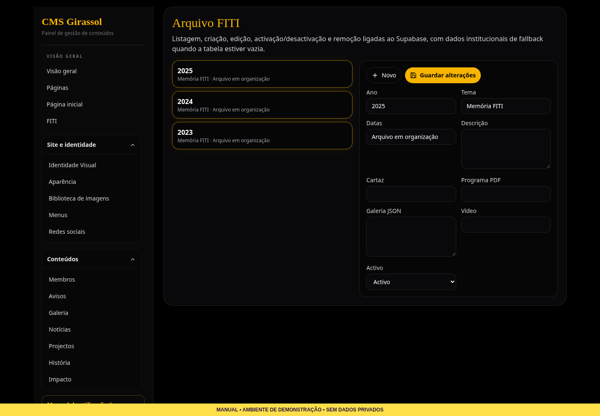
21. Contactos públicos e rodapé
O título e os textos de apresentação da secção de contactos mudam em Página inicial ou FITI. Email, localização, ligação WhatsApp e texto final encontram-se no final de Aparência. Como estes campos tentam guardar ao serem alterados, volte a abrir a área para confirmar o valor persistido.
Para WhatsApp, use uma ligação completa válida, por exemplo no formato https://wa.me/ seguido do número internacional sem espaços. Utilize apenas o número institucional aprovado. Os textos dos grupos de ligações, título de contacto e direitos de autor ficam em Aparência → Rodapé; as ligações ficam em Menus → footer_menu.
22. Formulários, definições e diagnóstico
Em Formulários, o botão «Exportar CSV» gera actualmente um modelo com cabeçalhos; não exporta as candidaturas ou mensagens reais. Não utilize esse ficheiro como cópia de segurança. Para extrair os registos reais, peça ao responsável técnico uma exportação autorizada da base de dados.
Definições apresenta informação do sistema. Não é uma área de gestão de utilizadores, recuperação de palavras-passe ou cópias de segurança.
Diagnóstico é uma área de apoio técnico. Os testes de ligação, leitura e leitura pública de logotipos ajudam a identificar problemas. Os testes de gravação, upload e sincronização fazem alterações reais. O teste de sincronização pode modificar texto público da Associação; a reposição depende da informação mantida nessa sessão. Reserve estes testes de escrita ao responsável técnico.
23. Resolver problemas frequentes
Não consigo entrar: confirme email e palavra-passe e peça ao responsável técnico que verifique a conta administrativa. Não há recuperação de conta dentro do painel.
A gravação dá erro: mantenha a edição aberta, confirme os campos obrigatórios e a ligação à Internet. Se persistir, registe a mensagem exacta e a área e contacte o apoio técnico. Não guarde conteúdos vazios sobre uma área que falhou ao carregar; utilize a opção de tentar novamente.
Guardei, mas o site não mudou: actualize a página pública; confirme que editou a Associação ou o FITI certo, que a secção está publicada, que o registo está activo e que clicou no botão de guardar correcto. Na programação, confirme também a edição e a data.
A imagem não aparece: abra o URL directamente, confirme que é público e que o ficheiro ainda existe. Guardar a imagem na biblioteca não preenche automaticamente todos os campos onde ela deve aparecer.
O fundo ou a faixa não mexe: confirme as opções de movimento, as pausas locais e a preferência de movimento reduzido do dispositivo. Na faixa de parceiros, confirme que há pelo menos dois logotipos activos no site correspondente.
Há conteúdos repetidos: compare os registos e a ordem antes de apagar. O mesmo parceiro nos dois sites pode ser intencional. Não apague um ficheiro da biblioteca só porque eliminou uma das suas utilizações.
O menu aponta para o lugar errado: confirme URL, página, grupo do menu e estado activo. Teste o percurso Associação → FITI → Associação no computador e no telemóvel.
24. Rotina de publicação e manutenção
Antes de divulgar: confirme textos e datas, direitos de utilização das imagens, contactos, edição activa, funcionamento dos botões e legibilidade das cores. Veja as duas páginas no telemóvel e teste calendário, filtros e regresso à Associação.
Regularmente: retire avisos expirados, responda às mensagens, actualize estados, reveja parceiros e ligações, prepare o arquivo das edições concluídas e combine cópias de segurança com o responsável técnico.
Não existe botão de desfazer geral, reciclagem nem restauro de versões no painel. Antes de substituir textos longos ou apagar registos, guarde uma cópia de trabalho. Uma cópia completa exige base de dados e ficheiros; o modelo CSV não substitui esse processo.
25. Glossário e limites desta versão
CMS: painel de gestão de conteúdos. URL: endereço de uma página ou ficheiro. Slug: identificador usado pelo sistema. Texto alternativo: descrição da imagem para acessibilidade. Ordem: posição relativa, normalmente do menor para o maior. ICS: ficheiro para calendário pessoal. JSON: formato estruturado destinado a utilização avançada.
O CMS gere os campos e conteúdos apresentados neste manual. A estrutura de novos componentes, novos tipos de conteúdo, automações de email, pagamentos, lotação, exportação real de dados, contas e metadados iniciais de partilha exigem trabalho técnico. Campos antigos que deixaram de servir o desenho actual não devem ser recriados como substitutos dos campos actuais.
Ao pedir apoio, indique a área, o conteúdo, os passos realizados, o resultado esperado e a mensagem exacta do erro. Não envie palavras-passe. Este guia deve ser revisto quando o painel receber novas funcionalidades.